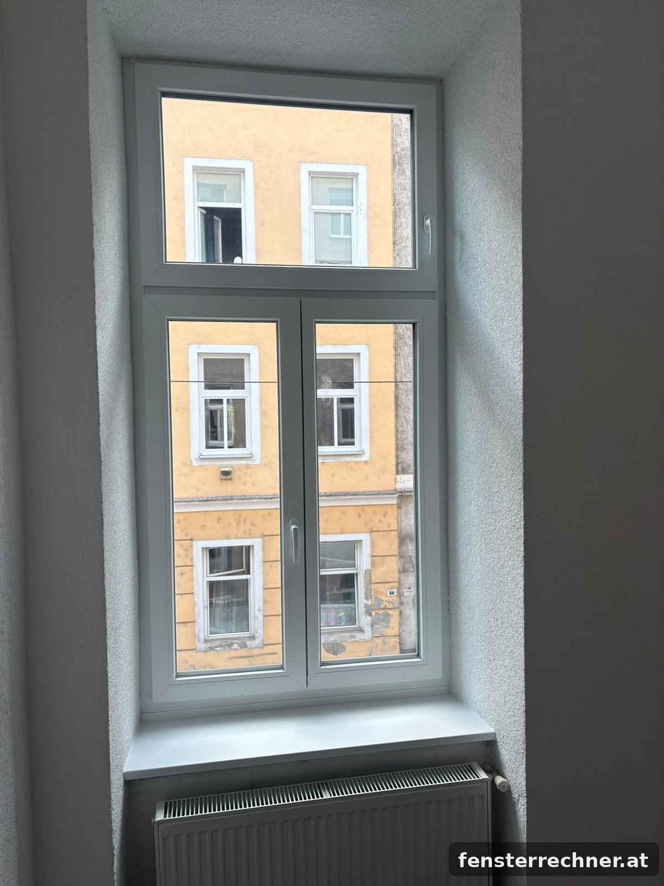

Fenstertausch im Altbau: Kosten, Ablauf und worauf Sie achten müssen
Alte Fenster sind der größte Wärmeverlust im Altbau: Ein Kastenfenster aus den 1960er-Jahren hat einen Uw-Wert von 2,5 bis 3,0 W/m²·K, ein neues Kunststofffenster mit Dreifachverglasung 0,9. Was der Tausch kostet, wie er abläuft und welche Fallen es gibt – aus der Praxis, mit echten Zahlen.

Pro Fenster kostet der Tausch im Altbau komplett 600 bis 1 000 €: 300 bis 650 € für das Fenster, 200 bis 400 € für Demontage, Montage und Entsorgung, dazu je nach Wand Laibung und Fensterbank. Eine Wiener Altbauwohnung mit vier Fenstern liegt bei rund 3 900 bis 4 500 €, ein Haus mit zehn Fenstern bei 6 000 bis 9 000 €. Dauer: vier bis sechs Wochen von der Anfrage bis zur Montage.
Was kostet der Fenstertausch pro Fenster?
Der Preis besteht aus drei Teilen, die Sie in jedem Angebot getrennt sehen sollten:
| Position | Kosten pro Fenster | Was enthalten ist |
|---|---|---|
| Fenster | 300–650 € | Kunststoff weiß, 70 mm, Dreifachverglasung – Preise siehe Tabelle unten |
| Demontage, Montage, Entsorgung | 200–400 € | Ausbau, Einbau nach ÖNORM B 5320, Abdichtung innen und außen, Abtransport der alten Fenster |
| Laibung und Fensterbank | 100–250 € | Verputzen der Innenlaibung, neue Fensterbank innen; außen je nach Fassade |
| Komplett | 600–1 000 € |
Richtwerte brutto inkl. 20 % MwSt. für Fenster bis etwa 1,3 × 2,1 m im Erdgeschoss bis 3. Stock. Balkontüren, sehr große Elemente und Fenster über Gerüst liegen darüber.
Fensterpreise für typische Altbau-Maße
Altbaufenster sind höher als moderne: 1,8 bis 2,2 m sind normal. Die Preise aus unserem Rechner, Kunststoff weiß, Profil 70 mm, beide Flügel Dreh-Kipp:
| Element | Maß (B × H) | Zweifach Ug 1,1 | Dreifach Ug 0,6 | Uw Dreifach |
|---|---|---|---|---|
| Fenster, 1 Flügel | 900 × 1800 | 295 € | 350 € | 0,93 |
| Fenster, 2 Flügel (Stulp) | 1100 × 1900 | 503 € | 567 € | 1,01 |
| Fenster, 2 Flügel (Stulp) | 1200 × 2000 | 539 € | 614 € | 0,98 |
| Fenster, 2 Flügel (Stulp) | 1300 × 2100 | 576 € | 664 € | 0,96 |
| Balkontür, 1 Flügel | 900 × 2200 | 340 € | 409 € | 0,91 |
Brutto, ohne Lieferung und Montage, Stand Oktober 2026 inkl. Aktionsrabatt 15 %. Für Kastenfenster mit Oberlicht kommt ein Kämpfer dazu – rechnen Sie Ihr Maß direkt im Fensterrechner.
Beispiel: Wiener Altbauwohnung mit 4 Fenstern
Drei zweiflügelige Fenster 1200 × 2000 mm und eine Balkontür 900 × 2200 mm, Kunststoff weiß, Dreifachverglasung, 2. Stock, kein Gerüst:
| Position | Stück | Einzelpreis | Summe |
|---|---|---|---|
| Stulpfenster 1200 × 2000 | 3 | 614 € | 1 842 € |
| Balkontür 900 × 2200 | 1 | 409 € | 409 € |
| Demontage, Montage, Entsorgung | 4 | 300–400 € | 1 200–1 600 € |
| Innenlaibung verputzen, Fensterbank innen | 4 | 100–150 € | 400–600 € |
| Gesamt | ca. 3 850–4 450 € |
Brutto inkl. 20 % MwSt. Lieferung nach Wien bei diesem Auftragswert separat. Die Montage dauert einen Arbeitstag.
So läuft der Fenstertausch ab
- Anfrage – Sie schicken uns ungefähre Maße und Fotos der Fenster, am einfachsten über den Rechner oder per WhatsApp. Innerhalb von 24 Stunden erhalten Sie ein Angebot mit Skizze und allen Positionen.
- Aufmaß vor Ort – Vor der Bestellung messen wir jedes Fenster persönlich nach. Im Altbau ist das Pflicht: Keine zwei Öffnungen sind gleich, Laibungen sind oft schief, und ein Fenster, das 2 cm zu groß ist, lässt sich nicht einbauen.
- Bestellung – Nach dem Aufmaß wird das Angebot fixiert. Üblich ist eine Anzahlung von 70 % bei Bestellung, der Rest nach Lieferung.
- Produktion – 3 bis 4 Wochen, Express in 2 Wochen auf Anfrage.
- Lieferung – Die Fenster kommen in Schutzfolie auf Paletten und werden mit dem Kran an der Adresse abgeladen.
- Montage – Pro Fenster 1 bis 2 Stunden: altes Fenster ausbauen, Öffnung reinigen, neues Fenster setzen, mit Rahmendübeln befestigen, ausschäumen, innen mit Dampfbremse und außen mit diffusionsoffener Folie abdichten (ÖNORM B 5320). Eine Wohnung mit vier Fenstern ist an einem Tag fertig, ein Haus mit zehn Fenstern in zwei bis drei Tagen.
- Laibung und Fensterbank – Nach der Montage werden die Innenlaibungen verputzt und die Fensterbänke gesetzt. Im Altbau braucht der Putz ein bis zwei Tage zum Trocknen, bevor gestrichen wird.
Besonderheiten im Altbau
Kastenfenster
Das typische Wiener Kastenfenster hat zwei hintereinanderliegende Flügelebenen in einem bis zu 30 cm tiefen Holzkasten. Beim Tausch wird der gesamte Kasten ausgebaut und das neue Fenster in die Mauerleibung gesetzt – meist mit Oberlicht, um die hohe Öffnung zu teilen. Dadurch wird die Fensterbank innen tiefer, und die Laibung muss neu verputzt werden. Planen Sie dafür Zeit und Budget ein.
Eigentumswohnung und Hausverwaltung
In Eigentumswohnungen zählen Außenfenster in der Regel zu den allgemeinen Teilen des Hauses. Der Tausch muss von der Hausverwaltung genehmigt werden, oft mit Vorgaben zu Farbe und Teilung – die Straßenfassade soll einheitlich bleiben. Fragen Sie vor der Bestellung schriftlich an; wir liefern dafür Skizze und technische Daten.
Schutzzonen und Denkmalschutz
In Wiener Schutzzonen und bei denkmalgeschützten Häusern kann der Tausch von Kastenfenstern an der Straßenfassade eine Bewilligung erfordern. Hoffassaden sind meist unproblematisch. Klären Sie das vor der Bestellung bei der Baubehörde – nachträglich ist es teuer.
Mietwohnung
Als Mieter dürfen Sie Fenster nicht ohne Zustimmung des Vermieters tauschen. Bei undichten Fenstern ist in der Regel der Vermieter für die Erhaltung zuständig – ein schriftlicher Antrag mit Fotos ist der erste Schritt.
Worauf Sie beim Angebot achten sollten
- Demontage und Entsorgung enthalten? Viele Angebote nennen nur die Montage.
- Abdichtung nach ÖNORM B 5320 – innen dampfdicht, außen winddicht. Nur Schaum ohne Folien ist keine fachgerechte Montage und führt nach wenigen Jahren zu Schimmel in der Laibung.
- Laibung und Fensterbänke – im Angebot oder separat? Beides ist in Ordnung, aber es muss klar sein.
- Uw-Wert des ganzen Fensters, nicht nur Ug des Glases. Für Förderungen zählt der Uw-Wert.
- Aufmaß vor der Bestellung – wer nur nach Ihren Maßen bestellt, trägt das Risiko auf Sie ab.
- Profil und Beschlag mit Namen – „Markenprofil" sagt nichts. Bei uns: Drutex IGLO 5 oder IGLO Energy, Beschlag MACO.
Lohnt sich der Fenstertausch?
Beim Tausch von Kastenfenstern (Uw 2,5–3,0) gegen Dreifachverglasung (Uw 0,9) sinkt der Wärmeverlust durch die Fenster um rund zwei Drittel. Bei einer Altbauwohnung mit 10 m² Fensterfläche sind das grob 1 500 bis 2 500 kWh Heizenergie pro Jahr – je nach Heizung 150 bis 400 € jährlich. Dazu kommen Schallschutz (von rund 25 auf 33 dB), keine Zugluft mehr und ein Fenster, das sich mit einer Hand kippen lässt. Für den Tausch im Zuge einer thermischen Sanierung gibt es Förderungen von Bund und Ländern – die Bedingungen ändern sich jährlich, prüfen Sie sie vor der Bestellung.
Maße eingeben, Teilung und Verglasung wählen – Sie sehen den Fensterpreis sofort. Montage und Aufmaß bieten wir nach Ihren Angaben an.
Häufige Fragen zum Fenstertausch
Was kostet ein Fenstertausch pro Fenster?
Im Altbau komplett 600 bis 1 000 €: 300 bis 650 € für das Fenster, 200 bis 400 € für Demontage, Montage und Entsorgung, dazu je nach Wand Laibung und Fensterbank.
Wie lange dauert ein Fenstertausch?
Vom Aufmaß bis zur Montage vier bis sechs Wochen, davon drei bis vier Wochen Produktion. Die Montage selbst: eine Wohnung mit vier Fenstern an einem Tag, ein Haus mit zehn Fenstern in zwei bis drei Tagen.
Kann man Fenster auch im Winter tauschen?
Ja. Die Fenster werden einzeln getauscht, jede Öffnung ist nur ein bis zwei Stunden offen. Im Winter sind Lieferzeiten oft kürzer und Montagetermine leichter zu bekommen.
Brauche ich für den Fenstertausch eine Genehmigung?
Im eigenen Haus in der Regel nicht. In Eigentumswohnungen muss die Hausverwaltung zustimmen. In Schutzzonen und bei Denkmalschutz kann für die Straßenfassade eine Bewilligung nötig sein.
Muss ich die alten Fenster selbst ausbauen?
Nein, Demontage und Entsorgung gehören zur Montage. Wer selbst ausbaut, spart 40 bis 80 € pro Fenster – muss die alten Fenster aber selbst entsorgen.